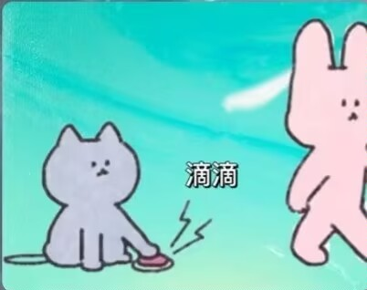

今天的你是不是依旧很漂亮？
相信你在看到这封信的时候，你此刻应该是和我一样的，深爱着彼此，虽然我们两个并不能每天都可以见到彼此。
但是我们的心意会彼此连接。
❤~~~~~~❤
我们的相遇是上天安排的一次意外，又或者是我们之间相互的吸引，让我们突破了时间的限制，空间的限制，年龄的限制。
我们走到了一起。
在我们相爱的第十四天，我也正好给我的爱人写一封表达爱意的信。
我在元旦前夕写了一个人生规划，说我今年的目标是《平凡之路》，也就是尽可能找到一份好的工作，接触更好的事物。
在三月底时我遇见了你，那个时候我们有一句没一句的聊着，我用着16岁杨力的身份在和你聊着。
在我们的交谈中我也慢慢的认识了你，了解了你。
感谢上天让你来到我的身边！
假身份能让你和我拉近距离吧，大家都是16岁，你也和我诉说着你对某人的喜爱，那时我也多希望能有人爱我呀。我也在给你出谋划策，为的是能让你有一个好的归宿。
我们那段时间聊天聊地，什么都聊了，我也把我的真实信息告诉了你，原本以为你会远离我，但是你没有。
也正因为你没有远离我，才让我们有了接下来的故事。
也许你会问我有多爱你，问我爱你的哪里，爱你什么。
我也会问我自己，爱是什么。我自己也不知道，我也在追寻爱是什么的答案。
我自己的对爱最简单的理解就是陪伴。
人们常说，陪伴是最长情的告白。
你我彼此的陪伴已有156天之久，我们每天都诉说着人生的理想，诉说着每天发生的事情。
爱情是一条长长的路，它不仅只是长，途中充满了各种诱惑，各种危险，各种矛盾，你和我谁一不小心，都有可能会从这条路掉下去。
不过你放心，我会漫着稳健的步伐走在这条长长的道路上的，我不仅可以自己走到路的尽头，我还能紧紧握着你的手一起走下去。
路上的挑战会非常非常的多，你一定不要放弃呀！请你握紧我的手，让我们一起走到最后，走到婚姻的礼堂，走到白头，走到人生尽头。
让我们的爱永远年轻，让我们意念合一！
我爱你！姜忠欣！
潘清华
2022年8月30日